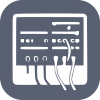

Notification rules for Craft 6 —
the right people, the right channel.

Pick a trigger, sites, sections and conditions. No code.
Every delivery is a queued, retried Laravel notification — logged, with failures on the sidebar.
And any Laravel channel: register a laravel-notification-channels package with one listener.
Craft’s own permissions, checked for every recipient.
Rendered per recipient, in their preferred language.
Outbound requests can’t reach your own network — whatever the URL says.